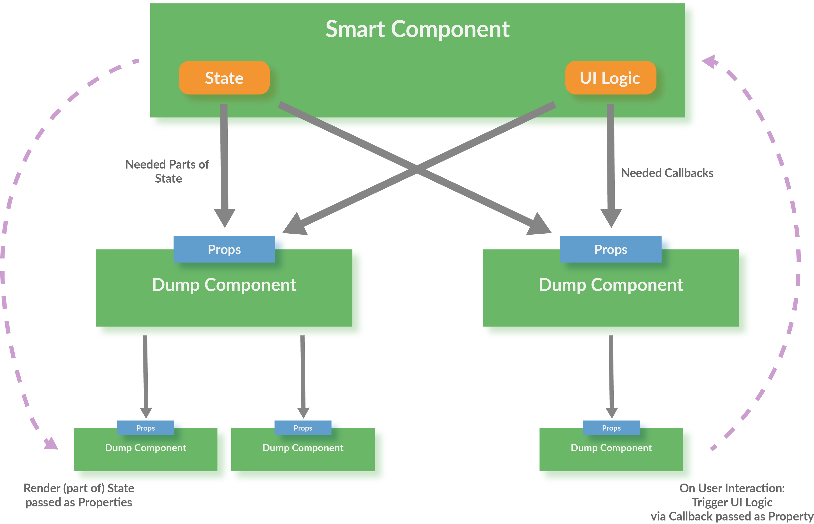

React Workshop - Vorbereitung
Falls noch nicht gemacht:
git clone https://github.com/DJCordhose/react-workshop.git- Im geklonten Verzeichnis:
npm install npm start- In neuem Terminal: in
code/workspacewechseln - Ausführen:
npm start - Browser öffnen: http://localhost:8080
- Wenn dort ein Hello-World-Text erscheint ist alles gut
Folien: Im geklonten Verzeichnis 2017_base.html
React Workshop
Inhalt
Mögliche nächste Schritte
Fortgeschrittene Themen
Beispiel-Anwendung

Teil 0
React-Einführung und Build-Prozess
React
- Framework für Facebook und viele andere
- Komponenten kapseln Template und Logik
- Deklarativ
- Abstraktion vom DOM: f(model) -> UI
- Minimales API
- Ein-Weg-Data-Binding: Zustandsänderungen stellen Komponente komplett neu dar
- Kann im Browser und auf dem Server rendern
- wird für komplette Anwendung typischerweise mit React Router und einem Flux-Framework gekoppelt
- viel Inspiration aus der funktionalen Ecke (Immutable, pure functions, stateless)
React Komponenten
- Werden als ES6 Klasse oder Funktion implementiert
- Keine Templatesprache (stattdessen JavaScript)
- Templates können HTML-artige Syntax enthalten (JSX)
class HelloMessage extends React.Component {
render() {
return <h1 className='title'>Hello, World!</h1>
}
}
Hello World React
DemoES6: Klassen
class Person {
constructor(name) {
this._name = name;
}
get name() {
return this._name;
}
}
class Programmer extends Person {
constructor(name, language) {
super(name);
this.language = language;
}
code() {
return this.name + " codes in " + this.language;
}
}const programmer = new Programmer('Erna', 'JavaScript');
console.log(programmer.code());
console.log(programmer instanceof Programmer); // true
console.log(programmer instanceof Person); // trueES6: Arrow Functions
const displayInPage = (text) => {
return document.body.innerHTML +=
`${text}
`;
};const displayInPage = text => document.body.innerHTML += `${text}
`;
Hello World React
class HelloMessage extends React.Component {
render() {
return (<div>
<input ref={input => this.input = input}
onChange={event => this.updateModel(event)}
value={this.state.greeting} />
<p>{this.state.greeting}, World</p>
<button
onClick={() => this.reset()}>
Clear
</button>
</div>);
} constructor(props) {
super(props);
this.state = {greeting: this.props.greeting};
}
updateModel(event) {
this.setState({greeting: event.target.value});
}
reset() {
this.setState({greeting: ""});
this.input.focus();
}
}Aufruf
// index.html
<html>
<body>
</body>
<script src="dist/main.js"></script>
</html>
// main.js
import React from 'react';
import ReactDOM from 'react-dom';
import HelloMessage from './HelloMessage';
const mountNode = document.getElementById('mount');
ReactDOM.render(<HelloMessage greeting="Hello"/>, mountNode);
Buildprozess
- ES6- und JSX-Code muss nach ECMAScript 5 übersetzt werden
- Typische Werkzeuge
- Babel (Compiler)
- Webpack (Bundler)
- Webpack Dev Sever (HTTP Server mit Hot Reload)
Webpack und Babel

Übung: React Hello-World
Mach dich mit den Werkzeugen vertraut und schreib deine erste React-Komponente
Schritt #1: Tool-Chain starten
Nutze das workspace-Verzeichnis in diesem Repository
Hier ist eine Tool-Chain mit Webpack und Babel vorbereitet
- Evtl. dafür einen Proxy konfigurieren http://wil.boayue.com/blog/2013/06/14/using-npm-behind-a-proxy/
npm install(auf oberster Ebene)cd code/workspacenpm start- Öffne http://localhost:8080 im Browser
- Wenn auf der Seite 'Hello, World' steht, ist alles gut
Schritt #2: Deine erste React-Komponente
- Ersetze die "statische" Komponente (HelloMessage) mit der React-Komponente aus dem vorherigen Beispiel aus den Folien
- Experimentiere mit der Anwendung, mache einige Änderungen, wie z.B.
- Alle Eingaben sollen in Großbuchstaben auftauchen
- Gib irgendeine Rückmeldung wenn die Eingabe erfolgreich gelöscht wurde
Teil I
React-Komponenten und ES6 Grundlagen
Ziel-AnwendungThemen
- Rendering
- Properties und Zustand
- Refs
ES6-Referenz
React: Rendering
- Jede React-Komponente braucht eine
render-Methode: - wird aufgerufen beim ersten Rendering und wenn sich der Zustand ändert
- kann HTML-artige JSX-Syntax nutzen
- JSX kann pures JavaScript in geschweiften Klammern enthalten (
{})
class GreetingDetail extends React.Component {
render() {
return (
<input ref={input => this.input = input}
onChange={event => this.updateModel(event.target.value)}
value={this.state.greeting} />
{this.state.greeting}, World
);
}
// ...
}
React: Rendering #2
- DOM-Events werden in React-Events verpackt
- React-Events haben weitgehend selbe API wie DOM-Events
- Es gibt keine automatische Bindung an Modelle
class GreetingDetail extends React.Component {
render() {
return (
<input onChange={event => this.updateModel(event.target.value)}
value={this.state.greeting} />
{this.state.greeting}, World
);
}
updateModel(greeting) {
this.setState({greeting});
}
// ...
}
ES6: Erweiterte Objekt-Literale
const name = 'Oma';
const person = {
// ES5: name: name
name
};
console.log(person.name); // Oma
ES6: Module, Importe und Exporte
ES6: Export einer einzigen Klasse
// Person.js
class Person {
// ...
}
export default Person;
ES6: Import
// Programmer.js
import Person from './Person';
export default class Programmer extends Person {
// ...
}
ES6: Benannte Exporte
// util.js
export function displayInPage(text) {
document.body.innerHTML +=
`${text}
` ;
}
// or
export { displayInPage };
import {displayInPage} from "./util";
displayInPage('Hello, World');
import {displayInPage as display} from "./util";
display('Hello, World');
import * as util from "./util";
util.displayInPage('Hello, World');
Neuerungen und Verbesserungen in ES6
Tagged Template Literals
Mini-DSLs: Template-Literals mit tag
function tag(strings, ...values) {
console.log(strings);
//[ '', ' codes in ', '.' ]
console.log(values);
//[ 'Oma', 'Haskell' ]
return 'whatever you want';
}
const expanded = tag`${person} codes in ${language}.`;
console.log(expanded);
//whatever you want
ES6: Destructuring von Objekten
const person = {
name: 'Olli',
email: 'oliver.zeigermann@gmail.com'
};const {name, notThere} = person;
console.log(`name=${name}`);
// name=Olli
console.log(`notThere=${notThere}`);
// notThere=undefined
const {address: {city}} = person;
console.log(`city=${city}`);
//city=Hamburg
ES6: Template Literals
const person = 'Oma';
const language = 'Haskell';
console.log(`${person} programs
${10 * 1024 * 1024} lines of code
in ${language}.`);
// Output:
// Oma programs
// 10485760 lines of code
// in Haskell.
Destructuring bei Parametern
const person = {
name: 'Olli',
address: {
city: 'Hamburg'
},
email: 'oliver.zeigermann@gmail.com'
};
function print({email: contact}) {
console.log(`contact=${contact}`);
}
print(person);
// contact=oliver.zeigermann@gmail.com
function g({name: x, y, z=10}) {
console.log(`x=${x}`); // x=olli
console.log(`y=${y}`); // y=undefined
console.log(`z=${z}`); // z=10
}
g({ name: 'olli' });
Destructuring bei Arrays
const [a, b] = [1, 2];
console.log(`a=${a}`);
// a=1
console.log(`b=${b}`);
// b=2
const [, b] = [1, 2];
console.log(`b=${b}`);
//b=2
Erweiterte Objekt-Literale
const name = 'Oma';
const person = {
// ES5: name: name
name,
// ES5: toString: function()
toString() {
return this.name;
}
};
console.log(person.name); // Oma
console.log(person.toString()); // Oma
for..of
Iterieren über alles was 'iterable' ist
for (const e of array2) {
console.log(e);
}
// Hi
// Olli
// how are you
// ?
Spread-Operator
Alles was 'iterable' ist kann in einzelne Parameter transformiert werden
const array1 = ['Olli', 'how are you'];
const array2 = ['Hi', ...array1, '?'];
console.log(array2);
// => ["Hi", "Olli", "how are you", "?"]
console.log(...array1);
React: Properties und Zustand
- Properties werden der Komponente von außen übergeben (und nicht verändert)
- Zustand (State) ist eine innere Eigenschaft der Komponente (die verändert werden kann)
- Beides sind Objekte mit Key-Value-Paaren
- Beide können an Unterkomponenten übergeben werden
Properties einer Komponente
- Properties werden von außen über den Konstruktor übergeben
- Properties dürfen nicht verändert werden
- Zugriff über
this.props
class TitleComponent extends React.Component {
constructor(props) {
super(props);
}
render() {
return <h1>{this.props.title}</h1>
}
// ...
}
<TitleComponent title='Hello World' />
Das besondere Property children
- Komponenten, die in einer anderen Komponente enthalten sind, werden über das Property children übergeben
- Kann ein Array sein oder eine einzelne Komponente, oder null
class DivWrapperComponent extends React.Component {
render() {
return <div>{this.props.children}</div>
}
// ...
}
<DivWrapperComponent>
I will be the first child
Because of me, children will now be an Array
</DivWrapperComponent>
Zustand einer Komponente
- Beispiel: Inhalt eines Eingabefelds, Daten vom Server
- Werte üblicherweise immutable
- Initialisieren im Konstruktor mit
this.state={} - Zustand lesen über
this.state - Zustand setzen über
this.setState()- Achtung: kein "reiner" Setter
- Führt alten und neuen Zustand zusammen
- Wird asynchron ausgeführt!
- Löst erneutes rendern der gesamten Komponente aus
Beispiel: Zustand einer Komponente
class GreetingDetail extends React.Component {
constructor(props) {
super(props);
this.state = { name: 'Klaus' };
}
updateModel(event) {
// Zustand ändern: Komponente wird neu gerendert
this.setState({name: event.target.value});
}
render() {
return <input value={this.state.name}
onChange={e => this.updateModel(e)} />
}
// ...
}
Render Zyklus

Virtual DOM

React: Refs
- Beim rendern kann man an eine Referenz des unterliegenden DOMs kommen
- die DOM-Referenz kann einer Funktion übergeben werden
- Diese Referenz kann man z.B. als Member-Variable speichern
class HelloMessage extends React.Component {
render() {
return (
<input ref={input => this.input = input} />
<button
onClick={() => this.input.focus()}>
Focus
</button>
);
}
}
Übung: Detail-Ansicht für unsere Gruß-Anwendung
Erzeuge eine Komponenten mit der man einen Namen und eine Grußformel eingeben kann
Schritte
Erweitere deine erste React-Komponente im workspace-Ordner
- benenne deine Komponente in
GreetingDetailum - du brauchst zwei Eingabefelder, die
nameundgreetingim Zustand der Komponente setzen - Zusatzaufgabe: Erweitere deine Komponente so, dass man von außen Properties übergeben kann, die den Zustand initialisieren
Teil II
Komponentenhierarchien
Komplette Anwendung aus Komponenten bauen
Ziel-AnwendungThinking in React
https://facebook.github.io/react/docs/thinking-in-react.html
Referenz
Themen
- Komponenten als Funktion
- Darstellung von Listen und Keys
- Architektur-Idee: Controller-Komponente und View-Komponente
- Durchreichen von Zustand und Callbacks
- PropTypes
Komponenten als Funktion
- Komponente ist eine einfache Funktion
- entspricht der
render-Methode - Properties werden als Object per Parameter übergeben
- Zurzeit nur ohne Zustand und ohne Lifecycle-Methoden
- Empfehlung: Funktionen statt Klassen verwenden (wenn möglich)
function Greet(props) {
return (
{props.greeting}
{props.name}
);
}
// Verwendung:
<Greet name="Susi" greeting="Hello" />
Komponenten als Funktion
// Mit Destructuring
function Greet({greeting, name}) {
return (
{greeting}
{name}
);
}
// Als Arrow Function
const Greet = ({greeting, name}) =>
{greeting}
{name}
}
Listen und Keys
- JSX bietet nichts für Listen
- Ausgabe typischerweise über
Array.map - Elemente einer Liste brauchen einen eindeutigen key
const greetings = [{
id: 0,
name: 'Olli',
greeting: 'Huhu'
},
{
id: 1,
name: 'Oma',
greeting: 'Hallo'
}
];
const body = greetings.map(greeting =>
<tr key={greeting.id}>
<td>{greeting.name}
<td>{greeting.greeting}
</tr>);
Controller und Child-Views
Durchreichen vom Zustand und Callbacks
- Funktioniert beides über Properties
class GreetingController extends React.Component {
render() {
const {greetings} = this.state;
return (
<GreetingMaster greetings={greetings}
onAdd={() => this.setState({mode: MODE_DETAIL})}
);
}
// ...
}
Properties übergeben mit Object-Spread
- Übergibt alle Eigenschaften eines Objektes als individuelle Properties
class GreetingController extends React.Component {
const greeting = { name: 'Klaus', greeting: 'Hello' };
render() {
return <GreetingDetail {...greeting} />
// entspricht:
// <GreetingDetail name='Klaus' greeting='Hello' />
}
}
PropTypes
- Eine Komponente kann deklarieren, welche Properties sie erwartet
- Auch der Typ kann angegeben werden
- Fehlende / falsche Properties führen zu Laufzeitfehlern
- Mögliche Typen
GreetingDetail.propTypes = {
greeting: PropTypes.shape({
name: React.PropTypes.string.isRequired,
greeting: React.PropTypes.string.isRequired
}),
onAdd: PropTypes.func.isRequired
};
Übung: Eine komplette Anwendung zusammen setzen
Füge deinen Detail-View und einen Master-View über eine Controller-Komponente zusammen
Schritte
- kopiere das Material aus
code/material/2-hierarchyin deinen src-Ordner - erweitere im
GreetingControllerdie render-Methode, so dass dein Detail-View angezeigt wird, wenn der Benutzer den Add-Button klickt - dort gibt es bereits einen Kommentar, der dir die richtige Stelle anzeigt und weitere Details enthält
- übergib einen Callback der
addGreetingnutzt - im deinem
GreetingDetailbrauchst du einen neuen Knopf, der mit dem neuen Gruß den Callback aufruft
Architektur Beispiel-Anwendung

GreetingMaster

GreetingDetail

Teil III
Remote-Calls gegen Server
Ziel-AnwendungHerausforderungen
- Wo speichern wir?
- Wie machen wir das Laden und Speichern technisch?
- Wie funktioniert asynchrone Verarbeitung in React?
- Wo steht der Code zum initialen Laden der Grüße?
fetch
Browser-API zum Laden und Speichern von Daten
fetch(url, {
method: 'PUT',
headers: {
'Accept': 'application/json',
'Content-Type': 'application/json'
},
body: JSON.stringify(payload)
})
.then(response => response.json())
.then(json => /* ... */)
.catch(ex => console.error('request failed', ex));
Promises
fetch
const url = `${BACKEND_URL}${path}`;
return fetch(url)
.then(response => response.json())
.then(json => /* ... */)
.catch(ex => console.error('request failed', ex));
Ein Promise ist ein Versprechen auf einen Wert
Wird evtl. erst in der Zukunft eingelöst
Erzeugen und asynchron reagieren
const promise = new Promise(resolve =>
setTimeout(
() => resolve('Result from promise'),
1000)
);
promise.then(value => console.log(value));
// Output after 1 second: Result from promise
Verkettete Ausführung
const promise = new Promise(resolve =>
setTimeout(
() => resolve('Result from promise'),
1000)
);
// then returns a new promise
const promise2 = promise.then(value => `${value} plus stuff`);promise2.then(value => console.log(value));
// Output after 1 second: Result from promise plus stuff
Fehler führen zum Abbruch der Chain
Allerdings muss man etwas tun, um das mitzubekommen
Catch-Klausel
Promise
// creates and directly resolves promise
.resolve('Result from promise')
.then(x => {
// this will be printed
console.log(x);
})
.then(() => {
console.log('This will be printed');
})
// this will NOT be printed as no error occured
.catch(e => console.log('error: ', e))
// Output:
// Result from promise
// This will be printedCatch-Klausel im Fehlerfall
Promise
// creates and directly resolves promise
.resolve('Result from promise')
.then(x => {
// this will be printed
console.log(x);
throw new Error('Something went wrong');
})
.then(() => {
console.log('This will NOT be printed');
})
// this will be printed
.catch(e => console.log('error: ', e))
// Output:
// Result from promise
// error: [Error: Something went wrong]Catch-Klausel bei Ablehnung
Promise
// creates and directly rejects promise
.reject('Promise rejected')
.then(x => {
// this will NOT be printed
console.log(x);
})
.then(() => {
console.log('This will NOT be printed');
})
// this will be printed
.catch(e => console.log('error: ', e))
// Output:
// error: Promise rejectedÜbung: Laden und Speichern der Daten von/auf einem Server
Entwickle auf Basis von fetch eine Version, die die Daten auf dem Server laden und dort wieder speichern kann
Der Server ist bereits vorgegeben und kann mit npm start im Root-Verzeichnis gestartet werden. Er ist dann unter Port 7000 erreichbar
Weitere Details findest du unter: code/material/3-remote/AUFGABEN.md
Teil IV
Integration mit 3rd-Party Bibliotheken
Ziel-Anwendung3rd Party Libs?
Es gibt eine große Anzahl von sehr praktischen JavaScript-Bibliotheken
Viele davon sind aber nicht als React-Komponenten entwickelt worden
Beispiels
jQuery und jQuery Plugins wie z.B. Bootstrap
d3 für interaktive SVGs und Chart Bibliotheken wie nvd3
Unser Beispiel: Verteilung der Grüße

nvd3 Pie Chart mit d3
Aufgabe: Einbetten des Pie Charts in eine React-Komponente
Herausforderungen?
- Wie kommen wir an den DOM Knoten der React-Komponente?
- Wie sagen wir React, dass nun NVD3 den Rest macht? Also, dass React nicht mehr neu rendern soll.
- Änderungen des Zustands sollen nach wie vor richtig dargestellt werden
- Ab welchem Zeitpunkt soll NVD3 das Rendern übernehmen?
- Wie können wir aus NVD3 heraus auch wieder andere React-Komponenten beeinflussen?
- Wie räumen wir wieder auf?
Übersicht über den Komponenten-Lifecycle
https://facebook.github.io/react/docs/react-component.html#the-component-lifecycleReact Chart Komponente #1
class Chart extends React.Component {
render() {
// (1) we render an empty svg and
// remember the reference to the DOM node
return <svg ref={c => this._chart = c}></svg>
}
shouldComponentUpdate() {
// (2) once rendered react never renders again
return false;
}
componentWillReceiveProps(nextProps) {
const {data} = nextProps;
// (3) we still get updates of properties making it reactive
updateNvd3Chart(this._chart, data);
}
// ...
}
React Chart Komponente #2
class Chart extends React.Component {
// ...
componentDidMount() {
const {data, onSegmentSelected} = this.props;
// (4) once rendered by react we create the nvd3 chart
const chart = createNvd3Chart(this._chart, data);
// (5) we delegate the label of clicked segment
// back to parent component
if (onSegmentSelected) {
chart.pie.dispatch.on("elementClick",
e => onSegmentSelected(e.data.label));
}
}
// (6) called just before destroying component
componentWillUnmount() {
this._d3selection.remove();
}
}
Übung: Ein Pie-Chart integrieren
Das Pie Chart soll eine Übersicht aller Grüße anzeigen
Ein Klick auf ein Segment des Pie Charts soll die Liste der Grüße filtern
Schritte
- kopiere das Material aus
code/material/4-3rd-partyin deinen src-Ordner - binde die Chart-Komponente in die render-Methode des
GreetingControllerein - alle Stellen die du ändern musst sind dort bereits mit einem Kommentar versehen
Zusatzaufgabe: Ein zweites Mal klicken auf das Segment soll den Filter wieder löschen
Teil V
React Router
Ziel-AnwendungAPI-Reference
https://github.com/reactjs/react-router/blob/master/docs/API.md
Themen
RouteundIndexRoute- history
- Nested routes und das
children-Property - Links
locationundparamProperty undcomponentWillReceiveProps
Router, Route, IndexRoute, Redirect
import { Router, Route, Redirect, IndexRoute, hashHistory }
from 'react-router';
const routes = <Router history={hashHistory}>
<Redirect from="/vote" to="/votes"/>
<Route path="/" component={Layout}>
<IndexRoute component={VotePage}/>
<Route path="votes/:id" component={SingleVotePage}/>
<Route path="login(/:redirect)" component={LoginPage}/>
<Route path="compose" component={VoteComposerPage} onEnter={requireAuth}/>
<Route path="*" component={NoMatchPage}/>
</Route>
</Router>;
Router
- Echte React-Komponente
- Top-Level-Komponente, entscheidet anhand der history, was dargestellt wird
- hat Routen als Kinder
const routes = <Router history={hashHistory}>
...
</Router>;
History
- Abstraktion der History des Browsers
- kann zur Navigation genutzt werden
- liefert aktuelle URL mundgerecht an den Router
hashHistorycodiert Pfad in angehängten Hash (#/vote)browserHistorycodiert Pfad direkt in URL (/vote)
// Push a new entry onto the history stack.
history.push('/home')
// Replace the current entry on the history stack.
history.replace('/profile')
Route
- Konfigurations-Komponente
- welche Komponente soll bei welcher URL darstellt werden
- können verschachtelt werden (nested)
- Matching der URL mit Konfiguration ergibt einen Pfad
- Alle Komponenten des Pfads werden dargestellt
// plain match (containing nested routes)
<Route path="/" component={Layout}>
// id is passed as parameter to component
<Route path="votes/:id" component={SingleVotePage}/> /
// redirect is optional
<Route path="login(/:redirect)" component={LoginPage}/>
// onEnter and onExit possible as hooks
<Route path="compose" component={VoteComposerPage}
onEnter={requireAuth}/>
// wildcard
<Route path="*" component={NoMatchPage}/>
</Route>
IndexRoute und Redirect
// /vote redirects to /votes
<Redirect from="/vote" to="/votes"/>
<Route path="/" component={Layout}>
// will be rendered additionally when path is just /
<IndexRoute component={VotePage}/>
// ...
</Route>
Nested Routes und children
- Router rendert den gematchten Komponenten-Pfad als seine Unterkomponenten
- Unterkomponenten werden als
childrenin denpropsübergeben childrenkann grundsätzlich eine oder mehrere Komponenten sein- beim Router ist es immer nur eine Komponente
export default function Layout(props) {
return
Greetings
{props.children}
;
}
Link
- Echte React-Komponente
- Ein Link auf eine Route
- wird als
a-Element gerendert - hat zudem einen Click-Handler, der den Default verhindert und das history-Objekt updated
- weiß, ob die Route auf die sie verweist, aktiv ist
<Link to={`/votes/${vote.id}`} activeClassName='active'>
{vote.title}
</Link>
Datenübergabe an Routen
Der Router übergibt den zu rendernden Routen Daten als Properties
- Property
location: enthältpathnameundquery - Property
params: die dynamischen Segmente der Route (z.B.id) - Lifecycle-Methode
componentWillReceiveProps: wird mit neuen Properties aufgerufen, wenn sich die Route geändert hat
Übung: Die Anwendung und Admin- und Nutzer-Ansicht unterteilen
Erstelle eine Route für den bestehenden Admin-Teil und binde eine Nutzer-Ansicht ein, die den Gruß darstellt
Schritte
- kopiere das Material aus
code/material/routerin deinen src-Ordner GreetingMasterenthält Links auf darzustellende Grüße- füge in
main.jseine Route aufGreetingDisplayhinzu - fülle
GreetingDisplayso dass sie einen solchen Gruß darstellt mit den vom Router übergebenen Parametern ausgibt